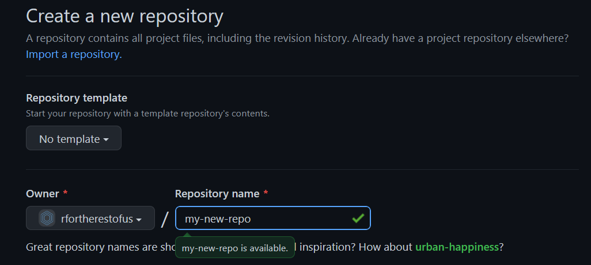
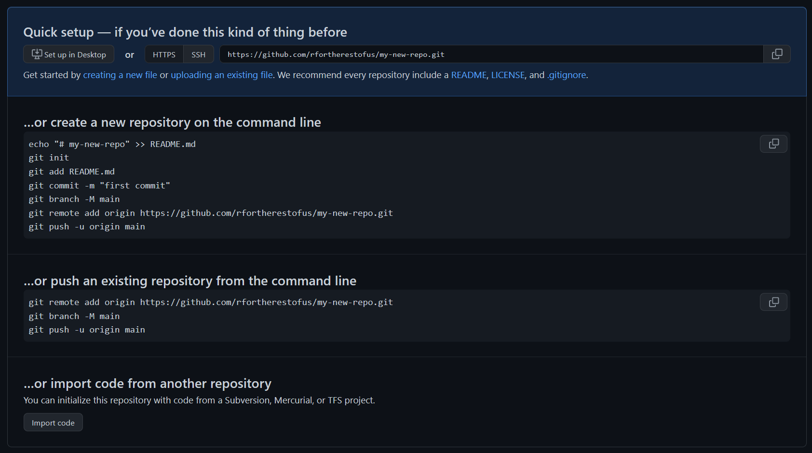
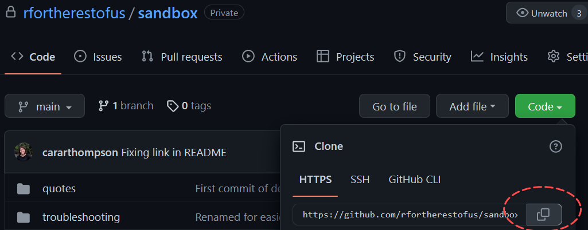
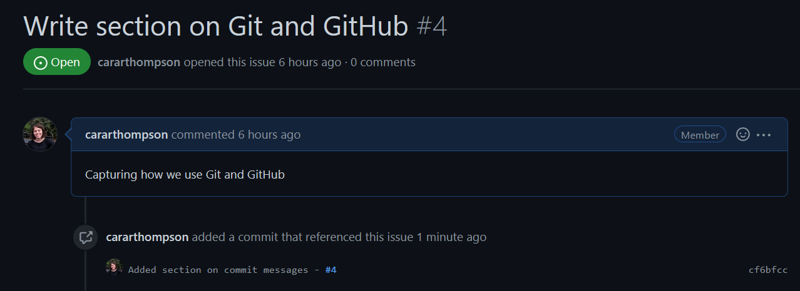

usethis::git_vaccinate()Git and GitHub
At R For The Rest Of Us, we collaborate on projects using Git and GitHub. Git is the gold standard for version control, and using it in conjunction with GitHub provides a neat way of exploring the more advanced Git features within a friendly interface. This section covers the basics of the Git etiquette we adopt, as well as a few how-tos and worked examples.
Overview
- Each project has its own unique repository
- The central repository for each project lives on GitHub; this is also referred to as
origin - Everyone working on that project is invited to the GitHub repo, and we then
clonethe repo to our own computers (this gives us what we call local repos)
The rest of this section assumes a basic understanding of how Git works. The main thing to note for new users is that, unlike something like Dropbox, changes only make it to the central repo (and from there to others), if Git is explicitly told about them via add, commit and push commands.
Setting Up a New Repo
The easiest way to create a new repo is to do it on GitHub. Make sure to give it a name that clearly identifies the project!
 Then follow the instructions that come up once you’ve clicked on Create Repository. Pick the option that best corresponds to the stage you have reached. If you have already used git init to make your local folder into a Git repo, pick the second option. If not, pick the first.

When creating a new repo, we want to add three files: README.md (which is added automatically in the first option), .gitignore and .gitattributes. The default branch of a new repo should be called main. This is GitHub’s new default, so should happen automatically.
README.md
This file should contain information about the purpose of the repo, and any information useful to other team members interacting with it. We sometimes make our repos available to clients towards the end of projects, so keep the contents of the README accessible to non-R specialists.
.gitignore
The best way to do this is by using {usethis} within R. Navigate to your repo, and type:
This will add a .gitignore file that excludes files with the following extensions from being tracked by Git.
.Rproj.user
.Rhistory
.Rdata
.httr-oauth
.DS_Store.gitattributes
This file allows us to work across different Operating Systems, which have different behaviours for handling line endings. Create a text file and rename it to .gitattributes (note, not gitattributes.txt) and copy the following content into it:
# Let Git's auto-detection algorithm infer if a file is text. If it is,
# enforce LF line endings regardless of OS or git configurations.
* text=auto eol=lf
# Isolate binary files in case the auto-detection algorithm fails and
# marks them as text files (which could break them).
*.{png,jpg,jpeg,gif,webp,woff,woff2} binary
Cloning an Existing Repo
To clone a repo from GitHub, it either needs to be public, or you need to have been invited to the repo. We invite all team members to the sandbox repo we created, and use it as a way of exploring different Git tricks.
To clone the repo, go to its GitHub page and click on Code, copy the text provided by GitHub by clicking on the copy icon.

Next, create a new folder called sandbox somewhere on your computer. Navigate to that folder in your terminal, and type git clone then paste in the text you’ve just copied, type space then . and hit Enter. That full stop means “clone the folder into the directory where I am currently”. If you miss that out, you’ll end up with this git folder called sandbox inside your sandbox folder which will make things very confusing. Your command should look like this:
git clone https://github.com/rfortherestofus/sandbox.git .This will create a local copy of the repo on your computer.
Depending on how your computer is set up, you may see a folder called .git. This is a hidden folder. Do not edit its contents!
Git Etiquette
Commit messages
There is an art to writing good commit messages.

Some organisations have very strict guidelines on that. Here, we just try to follow the following rules:
Commit often and frequently; this allow you to easily backtrack to the point where your code was doing what it should be.
Write clear commit messages. Things like “I fixed it!” are not all that helpful when trying to find a commit that addressed a specific problem!
If the change you’re making is linked to an issue on GitHub (we’ll come to issues later), include the number of the issue in the commit message (e.g. “Added section on commit messages - #4”). GitHub picks this up and adds a message into the issue, which allows us to easily keep track of progress.

Using branches
We encourage the use of branches when collaborating on projects. These can be daunting to new Git users, but once we get the hang of them, there’s no looking back!
What are branches?
We mentioned the default branch, main earlier. Think of this as the “stable universe” as far as the project is concerned. It contains up-to-date code that others can reliably use. A branch is essentially an “alternate universe” for the project, where we can experiment, make changes, test new things, all without disrupting the “stable universe” that others rely on.
Some organisations only ever allow changes to be made via a branch. There’s lot of wisdom in that, but sometimes it can become cumbersome. Here are some use cases where you could consider working in the main branch:
you are the only person working on the project
you are adding something to the project that doesn’t interact at all with the code others are writing
But even in those cases, you could consider using a new branch to be on the safe side. If in doubt, check with David.
Creating a New Branch
Creating a new branch is trivial. As with commit messages, we want to make sure the name of the branch gives a clear indication of its purpose. Say a client wants to add a new timeline to their report. The report is otherwise working as it should be. To work in a branch, and thereby allow them to keep using the report as is while you figure this out, you’ll want to
make sure you’re branching off an up-to-date
main:git pullcreate a new branch with a clear name:
git checkout -b adding-timeline-feature
You can also do this in RStudio or in GitHub Desktop.
Now the files that you see are ones that belong to your alternate universe called “adding timeline feature”. Everything will look the same, but changes you add and commit here won’t affect anything in main; if it all goes horribly wrong, you can delete this branch and know all is still well in the “stable universe”. You can then switch between universes as follows:
Commit (or stash) everything you’ve done within your branch
Go back to the “stable universe”:
git checkout main, probably followed bygit pullto see what’s happened there in your absence. The modifications you’ve made withinadding-timeline-featurewill no longer be visible to you.Go back to your own alternate universe:
git checkout adding-timeline-feature, and your modifications are back!
While you’re working on your feature, you can keep your branch backed up on GitHub, safe in the knowledge that it doesn’t affect anything in main. The first time you push, you need to “set the upstream”.
git push -u origin adding-timeline-featureEvery time after that, you can just use git push. Pushing your branch to origin allows others to view your branch (useful if you want to get feedback along the process), and ensures that if something bad happens to your computer, your work is stored somewhere else. Give it a go in our sandbox repo.
Create a new branch, with a name of your choosing, and add a quote to quotes/client-quotes.txt. Add, commit and push (remember to set the upstream branch!). Then checkout main again, and open the client-quotes.txt file. The quote you’ve added should no longer be there. Switch back to your branch, and it will reappear. The GitHub page for this repo should also now include your branch in the list of branches.
Creating a Pull Request
Pull request are the way we merge the work you’ve done in a branch back into our “stable universe” while allowing someone else to review the changes in the process.
TODO: example create a pull request for the added quote TODO: best for the branch author / person who made the most recent contribution to it to initiate the pull request TODO: get up to speed with main first.
Reviewing a Pull Request
TODO: We haven’t really done this, but it might be worth thinking about if projects get bigger - you can set things so that a merge into main needs to be approved by someone other than the person creating the pull request; a useful way to keep things safe, but we need to all be happy with pull requests first
Merging etiquette and branch hygiene
At this point comes a policy decision, which can be influenced by workload: who completes the approved merge? It could be the person who did the work, or the person who approved the merge. If there happen to be conflicts (see below), this can be non trivial. GitHub will tell you if there will be a conflict, in which case we can discuss who is best placed to resolve it.
And a second policy decision, which can be influenced by how we want to use the branches: should a branch be deleted once it has been merged in? The advantage of deleting branches as part of the merge is that this avoids needing to tidy them up at a later stage. You might have a feature you’re working on where a quick bug fix was needed, but you’d like to keep working on it to improve the code once the immediate need for the bug fix has passed. In that case, it might be best to keep the branch, but we’ll need to make sure we keep it up to speed with the “stable universe” by merging main into that branch before picking it up again.
To check the status of your branch(es) compared to others, click on the “branches” icon in the repo’s GitHub page. Here you can see by how many commits a branch is ahead and behind the default branch (typically main). A branch that is “behind” main by a large number of commits and hasn’t been updated for a while is probably a candidate for deletion, but if it wasn’t your branch, check with its author first!
Dealing with merge conflicts
The best way to deal with conflicts is to avoid causing them in the first place!
TODO: pull across info from my old team doc
TODO: I use TortoiseGit as a merge tool; makes it easier to compare the changes; what do others use?
Writing good issues
TODO: Decide if we want a section on this